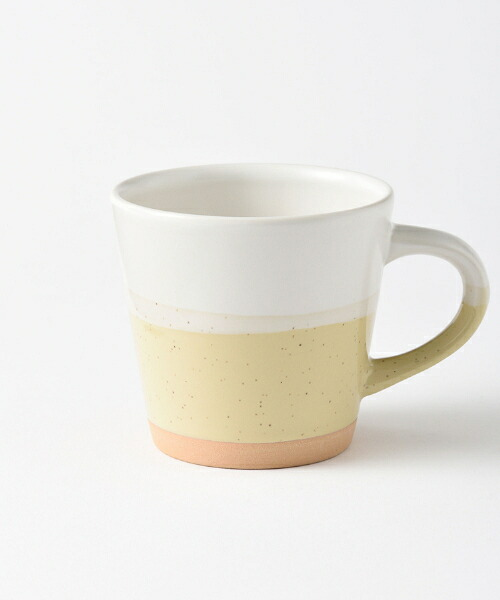
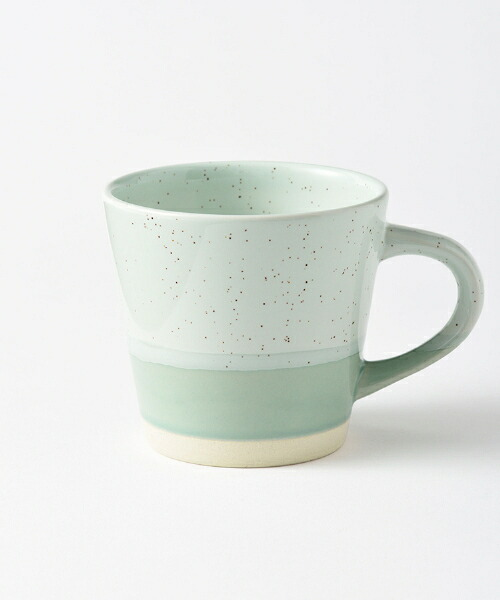
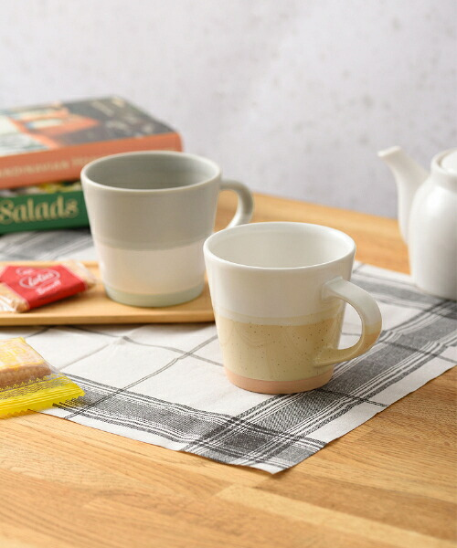

JAPAN MART BOX
굳사이클 · 일본 구매대행 · 18-135
BRUNO · 주방용품 · 머그
손에 쥐면 따뜻한, 300cc 한 잔
브루노 머그 RBHK027
세토야키 300cc · 일본 아이치현 세토시
23% 할인
42,100원
정가 54,800원
관부가세 포함가 · 배송비 무료

아이보리 바탕에 크림과 코랄을 층층이 올린 머그. 용량은 300cc입니다.
지름 90mm · 높이 85mm · 무게 250g

같은 형태에 유약 색만 다른 민트 모델입니다.
수작업 유약이라 색과 검은 점의 위치가 개체마다 다릅니다.

그레이 색과 나란히 두어도 잘 어울립니다. 두 잔을 올려도 자리가 넉넉합니다.
연출을 위해 두 잔을 함께 담았습니다. 실제 구성은 1개입니다.
KEY POINTS
사기 전에 이 네 가지만 보세요
01
300cc · 250g, 한 손에 쏙
지름 90mm, 높이 85mm. 커피 한 잔을 채우기 딱 좋은 크기이고, 가벼워서 오래 들어도 손목이 편합니다.
02
전자레인지 · 식기세척기 가능
자기(도자기)로 구워내 열에 강합니다. 오븐에만 넣지 마세요.
03
세토야키 · 아이치현 세토시
일본 6대 도자기 중 하나인 세토야키입니다. 장인이 하나씩 유약을 올려 같은 색이 두 개 없습니다.
04
바닥까지 마감한 안정적인 형태
아래로 갈수록 살짝 좁아지는 형태라 테이블에서 잘 넘어지지 않습니다.
SPEC
제품 사양
제조사(BRUNO) 공식 표기 기준
표기 값은 제조사 공식 카탈로그 기준입니다. 수작업 도자기라 실측·색상에 개체차가 있을 수 있습니다.
주문 전 꼭 확인해 주세요
수작업 유약 제품이라 색 번짐·미세한 검은 점·흔들림이 있을 수 있습니다. 불량이 아니라 세토야키의 특징입니다.
바닥의 거친 면이 테이블을 긁을 수 있으니 받침을 함께 쓰시면 좋습니다.
급격한 온도 변화와 강한 충격은 금·균열의 원인이 됩니다.
색상을 지정하고 싶으시면 주문 전에 톡톡으로 재고를 먼저 확인해 주세요.
일본 현지 정품 · 품절 안내
주문 전에 이것만은 알아 두세요
일본 브랜드 공식 스토어·직영점과 현지 공식 온·오프라인 유통처를 통해서만 구매합니다. 공식 유통 정품만 보냅니다.
해외 구매대행이라 재고를 보유하지 않고, 주문 확인 즉시 일본 현지에 1:1로 발주합니다.
현지 재고가 없거나 품절·단종이면 발주 전에 톡톡으로 먼저 알려 드리고, 원하시면 결제 금액 전액을 환불해 드립니다. 현지 가격이 오른 경우에도 진행 여부를 먼저 여쭙습니다.
설명서·포장은 일본어나 영어로 오고, 제조사 리뉴얼에 따라 최신 패키지로 발송될 수 있습니다.
관부가세 · 묶음배송 안내
주문 전에 이 세 가지만 확인해 주세요
상품가와 일본 현지 배송비를 합한 금액이 미화 150달러($150)를 넘으면 관세·부가세가 별도로 붙고, 그 금액은 구매자 부담입니다.
같은 날 다른 해외직구 물품과 함께 들어오면 합산과세될 수 있습니다.
통관에는 개인통관고유부호(P로 시작 13자리)가 꼭 필요하고, 주문자 성함·연락처와 같은 명의여야 합니다.
여러 상품을 함께 주문하면 배송메모에 묶음배송 요청이라고 적어 주세요. 국제배송비를 아낄 수 있습니다.
배송 · 통관 6단계
일본 현지 발주부터 국내 도착까지
1. 일본 현지 발주
주문을 확인한 뒤 일본 판매처에 바로 주문합니다.
2. 현지 센터 입고 · 검수
발송 전에 구성품과 외관을 한 번 더 확인합니다. 파손 우려 상품은 완충재(에어캡) 추가 보강 포장 후 발송합니다.
3. 국제 항공 특송
일본에서 국내로 항공 운송합니다.
4. 관세청 정식 통관
개인통관고유부호로 목록통관을 진행합니다.
5. 국내 택배 인계
통관이 끝나면 국내 택배로 넘깁니다.
6. 수령
평균 7~14일. 일본 휴무·물량에 따라 1~2일 더 걸릴 수 있습니다.
일본 휴무일·기상 악화·물량 집중 때는 1~2일 더 걸릴 수 있습니다.
Q. 배송은 얼마나 걸리나요?
A. 일본 현지 발주부터 수령까지 평균 7~14일입니다. 일본 휴무일이나 물량이 몰리는 시기에는 1~2일 더 걸릴 수 있습니다.
Q. 관부가세는 따로 내야 하나요?
A. 상품가와 일본 현지 배송비 합계가 미화 150달러를 넘을 때만 관세·부가세가 붙고, 그 금액은 구매자 부담입니다. 표시된 판매가는 관부가세 포함가입니다.
Q. 받은 상품이 파손됐거나 다른 상품이 왔어요.
A. 받으신 날부터 7일 이내에 네이버 톡톡이나 상품 문의 게시판에 사진과 함께 알려 주세요. 판매자 책임으로 교환 또는 환불해 드리고 왕복 배송비는 받지 않습니다.
Q. 주문 후 취소하거나 주소를 바꿀 수 있나요?
A. 일본 판매처에 발주하기 전이면 취소·주소 변경이 가능합니다. 발주가 끝난 뒤에는 해외 반송 비용이 들어 취소가 어려우니, 바꾸실 내용이 있으면 바로 톡톡으로 알려 주세요.
교환 · 반품 안내
받으신 날부터 7일 이내에 접수해 주세요
판매자 책임 — 왕복 배송비 없음
주문과 전혀 다른 상품이 온 경우(오배송)
운송 중 파손되어 도착한 경우(사진 확인 후)
상품 자체의 초기 불량
단순 변심 — 배송비 구매자 부담
단순 변심·색상·사이즈가 마음에 들지 않는 경우
주문 시 선택한 옵션과 다른 옵션을 원하시는 경우
해외 왕복 물류가 드는 상품이라 반품 배송비 30,000원, 교환 배송비 60,000원이 발생합니다. 사용 흔적이 있거나 포장을 훼손한 경우에는 교환·반품이 어려울 수 있습니다.
문의
네이버 톡톡 · 상품 문의 게시판 (가장 빠름) / 전화 070-8064-7086
상담 시간
평일 10:00~18:00 (주말·공휴일 휴무)
상품 사진과 상표는 판매처·권리자가 제공한 이미지이며 구매 안내 목적으로만 사용합니다. 권리자의 수정·중단 요청이 있으면 확인 즉시 조치합니다. 표기 사양은 제조사 공식 표기를 기준으로 정리했고, 제품 개선·생산 시기에 따라 색상·구성이 달라질 수 있습니다.